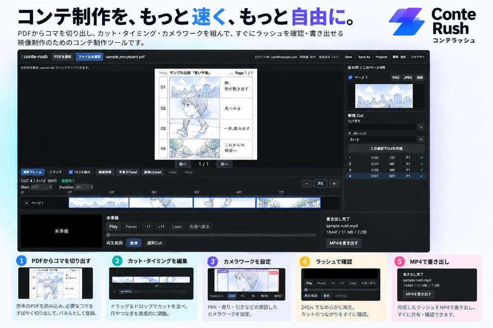

だれ向けか
アニメーター、演出、制作進行など、絵コンテ以降のタイミング確認やラッシュ確認を行う制作スタッフ向けです。ブラウザで開き、ログインしたうえで利用します。
作業の流れ
手元の絵コンテPDFを読み込み、コマを切り出して整理し、カットと尺を整え、Motion を付けてから、社内確認用のラッシュと映像を書き出します。
- 絵コンテPDF手元のファイルを開く
- コマの切り出し・整理画面上で切り出し、一覧で扱う
- カット作成番号と尺を付ける
- フレームタイミング各コマの開始位置を置く
- MotionPAN / 寄り / 引きを付ける
- ラッシュ確認ブラウザで再生する
- 確認用MP41280×720、24fps で書き出す
主な機能
- 絵コンテPDFの表示 ローカルのPDFをブラウザで開き、ページを移動できます。
- コマの切り出しと整理 表示中のページからコマを登録し、一覧で確認できます。手描きや画像の追加もできます。
- カットの作成 カット番号と尺を付け、所属するコマをまとめます。
- フレーム単位のタイミング 各コマの開始位置をフレームで置き、尺を調整できます。
- Motion PAN、寄り、引きを開始画角と終了画角で指定し、ラッシュ再生で確認できます。
- ラッシュ再生 配置したカットを24fpsでつなぎ、ブラウザ上で再生・コマ送りできます。
- 確認用MP4 1280×720、24fpsの映像のみMP4を書き出せます。
- タイムシート / XDTS 完成したタイムラインから紙面レイアウトのタイムシートPDFを書き出せます。CLIP STUDIO などの XDTS を開き、同じ紙面比率でPDFにする作業もできます。写真認識、タイムシートの直接編集、XDTS書き出し、タイムラインとの自動同期は行いません。
- 端末内での作業 制作ファイルはサーバーへ送りません。この端末への保存と、バックアップファイルの書き出しが使えます。
画面のイメージ
制作中の絵コンテや実案件の画面は掲載しません。実際の作業画面は、PDF表示、コマ一覧、カットとタイミング、ラッシュ確認が並ぶ構成です。
絵コンテPDFの表示とコマ枠
コマ一覧 / カット / ラッシュ
実画面の掲載用キャプチャは、権利上問題のない素材で後から差し込めます。
料金
月額100円（税込）
一般向けの有料プランです。申込と支払いはアプリ内で行います。
- 期間の定めのない契約です
- 毎月自動更新されます
- 無料トライアルはありません
- 1年間継続した場合の支払額の目安は 1,200円（税込）です
- Account の「契約を管理」から、いつでも次回更新を停止できます
運営・お問い合わせ
本サービス運営者への連絡先は mook.hary@gmail.com です。販売事業者名、所在地、電話番号は、請求があれば遅滞なく開示します。詳細は 特定商取引法に基づく表記 を見てください。